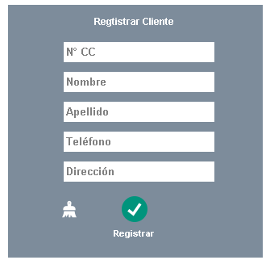

Para agregar un producto a la lista, usted debe primero dirigirse a la sección INVENTARIO, por medio del botón 'Inventario'
desde la pantalla inicial o desde la barra lateral izquierda. En la parte superior vera el siguiente módulo:
Tendrá que llenar todos los campos y seleccionar las opciones requeridas para que el producto se adicione a la lista,
si el proceso tiene algún inconveniente, usted verá ALERTAS o ERRORES
con su explicación, pero si el procedimiento está bien
se mostrará un mensaje bajo el módulo como el siguiente: "PRODUCTO AGREGADO (REF:XXXXX)".
¿Cómo buscar un producto y editarlo?
Para buscar un producto debe estar ubicado/a en INVENTARIOS donde encontrar el buscador por referencias,
la referencia ingresada, mostrara el producto al cual pertenece así:
Al tener el producto a la vista, es posible editarlo; para ello es necesario que el producto sea
seleccionado y luego presionar el botón
De inmediato se abre el panel editar, muy similar al de registro de producto. Este panel debe estar
lleno para realizar acciones de actualizar o eliminar, de igual manera se muestran advertencia para lograr una acción:
Para cerrar este panel se debe dar clic en la X que se encuentra en su borde derecho.
¿Cómo ver todos los productos?
Para ver todos los productos se debe hacer clic en el botón:
El cual mostrara la tabla de todos los productos registrados, y en donde también se puede emplear la acción de editar producto.
Para ocultar la tabla es necesario presionar el mismo botón, solo que esta vez es "Ocultar Productos".
¿Cómo conozco el stock?
Nuestro sistema tiene un método personalizado a sus necesidades y su empresa, concite en mostrar
el total de productos disponibles:
Y también una forma específica de buscar las cantidades de los productos con las mismas características, siempre mostrará
el número de productos que están disponibles.
¿Cómo registro un cliente?
Para registrar un cliente debe está en la sección de facturacioacute;n, donde encontrara en la parte
superior izquierda este botoacute;n:
El cual abre el moacute;dulo para registro y buscar clientes. Cabe aclarar que para registro cliente
el módulo estaacute; en color GRIS.

Cómo busco y edito un cliente?
Para actualizar un cliente debe está en la sección de facturacioacute;n, donde encontrara en la parte
superior izquierda este botoacute;n. El cual abre el moacute;dulo para registro y buscar clientes.
En la parte superior se encuentra la entrada de número de identidad para hacer la busqué:
Cuando se ingresan los datos, el módulo de registrar cliente que está en gris, ahora cambia a ser el módulo para actualizar
y editar cliente, este módulo ahora se muestra de color VERDE:
¿Cómo genero una factura?
Para generar una factura, es necesario que se registre primero al cliente, luego en el módulo de "Crear Factura"
en la sección Facturación, debe llenar todos los campos necesarios y agregar los productos por referencia con el
botón:, si todo el proceso se completa con éxito al presionar
el sistema emite la factura, si no saldrán alertas
que le informan de algún inconveniente. Si desea cancelar la factura haga clic en el botón:,
peor si lo que desea es eliminar un producto agregado a la lista debe presionar: .
¿Cómo busco una Factura?
La búsqueda de factura se hace desde la sección Facturación, en donde se encuentra el módulo para tal fin,
la busque se hace por el número de identidad del cliente o por un día en específico, el módulo de Buscar
cliente permite mostrar la factura que se ha generado por la compra.
¿Como generar un reporte?
El sistema permite generar seis tipos diferentes de reportes. En todos los casos el proceso se lleva a cabo
ingresando dos fechas:
Pero es de tener en cuenta la FECHA INICIAL y la FECHA FINAL, si no saldrán alertas
que le dirán que lo corrija.
Una diferencia solo la encontramos que podemos generar reportes de todos los empleados con solo seleccionar
las fecha, pero en la misma módulo si seleccionamos las fechas más el nombre del vendedor, el sistema emite un
reporte individual del vendedor.
¿Cómo edito mis datos?
Los datos de usuario se pueden editar en la última sección, AJUSTES, para ser exactos, donde encontrara el módulo
de edición junto a los datos de la empresa que solo pueden actualizarse por el administrador del sistema.
Para Editar y actualizar los datos de usuario es necesario que ingrese su contraseña. En este aspecto queremos
recordarle cambiar periódicamente su contraseña.
(Admin) ¿Cuáles son las Funciones del Administrador?
El administrador tiene funciones habilitadas que otros usuarios no, como las siguientes:
Asignar Otros Administradores:
En la última sección, AJUSTES, el administrador encuentra en la parte superior el botón:
El cual abre un nuevo módulo de registro de usuario-Administrador, en el cual en Administrador
registra los datos de uno nuevo.
Inhabilitar o Activar usuario:
En este apartado el administrado tiene la posibilidad de "bloquear" el acceso al sistema o activarlo.
Para bloquear el acceso a un usuario, el administrador debe buscar y seleccionar al usuario y escoger la acción
correspondiente (Inhabilitar/Activar).
Actualizar o Editar Datos de la Empresa:
El administrador será el único que puede modificar los datos de la empresa en el último módulo dedicado para tal fin.
No encontro mi pregunta
Si ninguna de las anteriores respuestas soluciona su inquietud, comuníquese al siguiente correo electrónico:
sisintex.ayudas@gmail.com.
con gusto atenderemos sus preguntas, sugerencias o quejas.
O puede hacer clic en SUGERENCIAS en la parte inferior.